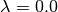

Tools¶
In the $PROTOMSHOME/tools folder we have collect a range of useful scripts to setup and analyse ProtoMS simulations. Many of them are used by the protoms.py setup script. In this page we have collected the documentation for these tools with the user as a focus. Developers might be interested in looking at the Python code manual in the .doc folder.
ambertools.py¶
Program to run antechamber and parmchk for a series of PDB-files
usage: ambertools.py [-h] [-f FILES [FILES ...]] [-n NAME]
[-c CHARGE [CHARGE ...]]
- optional arguments
-f, --files the name of the PDB-files -n="UNK", --name="UNK" the name of the solute -c, --charge the net charge of each PDB-file
Examples:
ambertools.py -f benzene.pdb
ambertools.py -f benzene.pdb -n BNZ
ambertools.py -f benzenamide.pdb -c 0
ambertools.py -f benzene.pdb toluene.pdb -n BNZ TOL
Description:
This tool encapsulate the program antechamber and parmchk from the AmberTools suite of programs.
It will produce an Amber prepi-file, containing the z-matrix and atom types of the given solutes, parametrized with the general Amber force field and AM1-BCC charges. It will also produce an Amber frcmod-file with additional parameters not found in the GAFF definition. These files be named after the input pdbfile, replacing the extension .pdb with .prepi and .frcmod
The antechamber and parmchk program should exist in the system path or the AMBERHOME environment variable should be set correctly.
build_template.py¶
Program to build a ProtoMS template file
usage: build_template.py [-h] [-p PREPI] [-o OUT] [-z ZMAT] [-f FRCMOD]
[-n NAME] [-t TRANSLATE] [-r ROTATE] [--alldihs]
[--gaff GAFF]
- optional arguments
-p, --prepi the name of the leap prepi-file -o="lig.tem", --out="lig.tem" the name of the template file -z, --zmat the name of the zmatrix-file, if it exists -f, --frcmod the name of the frcmod-file, if it exists -n="UNK", --name="UNK" the name of the solute -t=0.1, --translate=0.1 maxmium size for translation moves in Angstroms -r=1.0, --rotate=1.0 maxmium size for rotation moves in degrees --alldihs=False sample improper dihedrals --gaff="gaff16" gaff version to use, gaff14 or gafff16
Examples:
build_template.py -p benzene.prepi
build_template.py -p benzene.prepi -f benzene.frcmod
build_template.py -p benzene.prepi -f benzene.frcmod -o benzene.template -n BNZ
build_template.py -p benzene.prepi -f benzene.frcmod -t 1.0 -r 10
Description:
This tool builds a ProtoMS template file for a solute given an Amber prepi file.
If the solute needs parameters not in the specified GAFF release, they should be supplied with the frcmodfile.
The tool will automatically make an appropriate z-matrix for Monte Carlo sampling. This works in most situations. However, if something is not working properly with the generated z-matrix, one can be supplied in the zmatfile
The default translational and rotational displacements are based on experience and should be appropriate in most situations.
calc_bar.py¶
Program to calculate free energy from Bennett Acceptance Ratio
usage: calc_bar.py [-h] [-d DIRECTORY] [-r RESULTS] [-s SKIP] [-m MAX]
[-t TEMPERATURE] [-pw] [-pu] [-pl] [-b NBOOTS]
- optional arguments
-d="./", --directory="./" the root directory that contains all the output files of the simulation. Default is cwd. -r="results", --results="results" the beginning of the name of the file to analyse. Default is results. -s=0, --skip=0 the number of blocks to skip to calculate the free energy differences in one window. default is 0. Skip must be greater or equal to 0 -m=99999, --max=99999 the upper block to use. default is 99999 which should make sure you will use all the available blocks. max must be greater or equal to 0 -t=25.0, --temperature=25.0 the simulation temperature in degrees. Default is 25.0 -pw=True, --print-win=True turns off printing of individual windows -pu=True, --print-uncert=True turns off printing of uncertainties -pl=True, --print-lam=True turns off printing of lambda-values -b=100, --nboots=100 the number of bootstrap samples
Examples:
calc_bar.py -d out_free/
calc_bar.py -s 200
calc_bar.py -m 200
calc_bar.py -d out_free/ -pw
Description:
This tool calculates free energies using the Bennets Acceptance Ratio (BAR) method.
The program expects that in the directory there exist an output folder for each  -value, eg.
-value, eg. lam-0.000 and lam-1.000
The uncertainty of the free energies is estimated by boostrapping the energy differnces. The number of bootstrap samples is set by the nbootstraps argument. The procedure is rather slow, so in order to obtain a quick estimate of the free energy, lower this value.
Block estimates can be constructed by combining nskip and nmax. For instance, these commands calculates block estimates with a block size of 5 m snapshots
for X in 0 50 100 150 200 250 300 350
do
calc_bar.py -d out_free -nskip $X -nmax 50 -b 5 -pw -pu
done
calc_clusters.py¶
Program to cluster molecules
usage: calc_clusters.py [-h] [-f FILES [FILES ...]] [-o OUT] [-m MOLECULE]
[-a ATOM]
[-t {average,single,complete,weighted,centroid}]
[-c CUTOFF] [--skip SKIP] [--max MAX]
- optional arguments
-f, --files the input PDB-files -o="clusters.pdb", --out="clusters.pdb" the name of the output pdb that contains the cluster representatives, default=’clusters.pdb’ -m="wa1", --molecule="wa1" the name of the molecule to extract, default=’wa1’ -a, --atom the name of the atom to extract. If left blank, the entire molecule will be clustered, default=None -t="average", --type="average" the type of hierarchical clustering method, default=’average’
Possible choices: average, single, complete, weighted, centroid
-c=2.0, --cutoff=2.0 the distance cutoff that defines whether conformations belong to a cluster, default=2.0 --skip=0 the number of blocks to skip to calculate the clusters. default is 0. Skip must be greater or equal to 0 --max=99999 the upper block to use. default is 99999 which should make sure you will use all the available blocks. max must be greater or equal to 0
Examples:
calc_clusters.py -f all.pdb
calc_clusters.py -f all.pdb all2.pdb
calc_clusters.py -f all.pdb -o all_clusters.pdb
calc_clusters.py -f all.pdb -t complete
Description:
This tool cluster molecules from a simulation
It will extract the coordinates of all atoms with name equal to atom in residues with name equal to molecule in all input files and cluster them using the selected algorithm. If no atom is specified, the entire molecule will be clustered. By default this atom and residue name is set to match GCMC / JAWS output with the standard water template.
calc_density.py¶
Program to discretize atoms on a 3D grid
usage: calc_density.py [-h] [-f FILES [FILES ...]] [-o OUT] [-r RESIDUE]
[-a ATOM] [-p PADDING] [-s SPACING] [-e EXTENT]
[-n NORM] [-t {sphere,gaussian}] [--skip SKIP]
[--max MAX]
- optional arguments
-f, --files the input PDB-files -o="grid.dx", --out="grid.dx" the name of the output grid-file in DX-format, default=’grid.dx’ -r="wa1", --residue="wa1" the name of the residue to extract, default=’wa1’ -a="o00", --atom="o00" the name of the atom to extract, default=’o00’ -p=2.0, --padding=2.0 the amount to increase the minimum box in each direction, default=2 A -s=0.5, --spacing=0.5 the grid resolution, default=0.5 A -e=1.0, --extent=1.0 the size of the smoothing, i.e. the extent of an atom, default=1A -n, --norm number used to normalize the grid, if not specified the number of input files is used -t="sphere", --type="sphere" the type of coordinate smoothing, should be either ‘sphere’, ‘gaussian’
Possible choices: sphere, gaussian
--skip=0 the number of blocks to skip to calculate the density. default is 0. Skip must be greater or equal to 0 --max=99999 the upper block to use. default is 99999 which should make sure you will use all the available blocks. max must be greater or equal to 0
Examples:
calc_density.py -f all.pdb
calc_density.py -f all.pdb all2.pdb
calc_density.py -f all.pdb -o gcmc_density.dx
calc_density.py -f all.pdb -r t4p -n o00
calc_density.py -f all.pdb -p 1.0 -s 1.0
calc_density.py -f all.pdb -e 0.5 -t gaussian
calc_density.py -f all.pdb -n 100
Description:
This tool discretises atoms on a grid, thereby representing a simulation output as a density.
It will extract the coordinates of all atoms with name equal to atom in residues with name equal to residue in all input files and discretise them on a grid. By default this atom and residue name is set to match GCMC / JAWS output with the standard water template.
The produced density can be visualized with most programs, e.g.
vmd -m all.pdb grid.dx
calc_dg.py¶
Program to calculate free energy from TI/BAR/MBAR
usage: calc_dg.py [-h] [-d DIRECTORIES [DIRECTORIES ...]] [-r RESULTS]
[-s SKIP] [-m MAX] [-t TEMPERATURE] [-b NBOOTS] [-gr] [-pg]
[-pe] [--analytical] [--numerical {both,back,forw}]
[-e {ti,bar,mbar} [{ti,bar,mbar} ...]] [--autoeqb]
- optional arguments
-d=['./'], --directories=['./'] the root directory that contains all the output files of the simulation. Default is cwd. -r="results", --results="results" the name of the file to analyse. Default is results. -s=0, --skip=0 the number of blocks to skip to calculate the free energy differences in one window. default is 0. Skip must be greater or equal to 0 -m=99999, --max=99999 the upper block to use. default is 99999 which should make sure you will use all the available blocks. max must be greater or equal to 0 -t=25.0, --temperature=25.0 the simulation temperature in degrees. Default is 25.0 -b=100, --nboots=100 the number of bootstrap samples -gr=False, --plot-grads=False turns on producing plot of gradients -pg=True, --print-grad=True turns off printing of gradient -pe=True, --print-each=True turns off printing of each free energy --analytical=False turns on use of analytical gradients --numerical="both" the kind of numerical gradient estimator
Possible choices: both, back, forw
-e=['ti', 'bar', 'mbar'], --estimator=['ti', 'bar', 'mbar'] the type of estimator to use
Possible choices: ti, bar, mbar
--autoeqb=False use automatic equilibration detection to determine how much data is included in free energy difference
Examples:
calc_dg.py -d out_free/
calc_dg.py -d out_free1/ out_free2/ out_free3/ -s 200
calc_dg.py -d out_free1/ out_free2/ out_free3/ -m 200
calc_dg.py -d out_free1/ out_free2/ out_free3/ -e ti bar
Description:
This tool calculates free energies using the method of thermodynamic integration (TI), Bennet’s Acceptance Ratio (BAR) and multi state BAR (MBAR).
The program expects that in the directory, directory2 etc. there exist an output folder for each -value, eg. lam-0.000 and lam-1.000
If the -gr flag is set the gradient with respect to is plotted and saved to a file called gradient.png
The MBAR estimator only works if PyMBAR is properly installed and can be loaded as a python library.
calc_gci.py¶
Program to analyse and plot free energies from GCMC simulations
usage: calc_gci.py [-h] [-d DIRECTORIES [DIRECTORIES ...]] [-f FILE]
[-p {titration,fit,percentiles,pmf,all} [{titration,fit,percentiles,pmf,all} ...]]
[-c {fit,pmf,minimum,excess,all} [{fit,pmf,minimum,excess,all} ...]]
[-s SKIP] [-b BOOTSTRAPS] [-i INPUT] [-o OUT]
[--steps STEPS] [--range RANGE [RANGE ...]] [--reverse]
[--fit_options FIT_OPTIONS] [-v VOLUME]
- optional arguments
-d, --directories the directories containing the GCMC simulation data, default=None -f="results", --file="results" the name of the file to analyse. Default is results. -p, --plot whether to plot the GCMC simulation data or analysis, default=None
Possible choices: titration, fit, percentiles, pmf, all
-c, --calc fit an artificial neural network to the data, the potential of mean force to bind a specified number of waters, locate the minimum of the pmf
Possible choices: fit, pmf, minimum, excess, all
-s=0, --skip=0 the number of initial snapshots that will be discarded when fitting -b, --bootstraps the number of bootstrap samples to perform. -i, --input the pickled neural networks that will be read, bypassing the fitting procedure, default=ANNs.pickle -o, --out the pickled file name where the fitted neural networks will be output, default=ANNs.pickle --steps=1 the number of steps observed in the titration data that will be fitted to --range range of water molecules to calculate free energy --reverse=False reverse the direction of integration, starting from the highest number of waters to the lowest number, default=False --fit_options additional options to be passed to the artificial neural network -v, --volume volume of the GCMC insertion region
Examples:
calc_gci.py -d out_gcmc/b_* -p titration
calc_gci.py -d out_gcmc/b_* -p all -c all --steps 3
calc_gci.py -d out_gcmc/b_* -p percentiles -c fit --steps 3 -b 1000 --fit_options "repeats 1 pin_min 0.0 cost huber c 1" -o ANN.pickle
calc_gci.py -d out_gcmc/b_* -i ANN.pickle -p pmf -c pmf minimum
calc_gci.py -d out_gcmc/b_* -i ANN.pickle -c pmf --range 3 4
Description:
Collection of tools to analyse and visualise GCMC titration data of water using grand canonical integration (GCI). Used to plot average number of waters for a given Adams value, i.e. GCMC titration data, calculate transfer free energies from ideal gas, calculate absolute and relative binding free energies of water, calculate and/or estimate optimal number of bound waters. As described in Ross et al., J. Am. Chem. Soc., 2015, 137 (47), pp 14930-14943.
Prior to using the armoury of options available in this script, it is wise to first view the titration data with -p titration. The plot shows the average number of water molecules at each Adams value. It’s important to use --skip nframes to check that the form of the graph doesn’t significantly change if some initial snapshots are discarded when computing the average. The value of nframes can be informed by the tool calc_series.py.
All the other functions contained in this tool require the fitting of a monotonically increasing artificial neural network (ANN) to the titration data. This is merely a sum of logistic/step functions that has been constrained to produce a line with upward steps. The purpose of the ANN is to smooth over the titration data so the area under the curve can be reliably evaluated; the imposition of monotonicity is important as it is a property the titration data should have. The number of units in the ANN (i.e. the number of step functions) is input using --steps nsteps and should be chosen to capture the major features of the titration data. It is better to err on the side of over-fitting than under-fitting, so don’t be stingy with how many steps you use. To improve reproducibility and to save time in subsequent analyses, an ANN can be saved and loaded using the flags -i and -o respectively. The fitting of an ANN is performed automatically if any of the calculation options (other than fit) with -c are specified. Detailed fitting parameters can be parsed to the ANN using --fit_options, discussed below.
Error estimates of free energies and optimal number of waters are based on either (a) automatic repeated fitting of the ANN from different random initial parameters or (b) bootstrap sampling of the titration data, which samples B-values with replacement. The latter is selected with -b nboots, where nboots is the number of bootstrap samples. When running a large number of bootstrap samples (eg 1000), its recommended to save to bootstrap ANNs with -o.
The flag -c pmf calculates the free energy to transfer water molecules from ideal gas, and from bulk water, where the abbreviation stands for “potential of mean force”. A table will be printed that contains the free energy to transfer water from ideal gas to the simulated volume (with the heading IDEAL GAS TRANSFER FREE ENERGIES), and the free energy to transfer from bulk water at a temperature of 298.15 K (with the heading BINDING FREE ENERGIES). From the multiple ANN fits (either automatic repeated fits or bootstrap sampling), various statistics have been calculated. The Mean and Median are different averages of the calculated free energies, with the median being more robust to bad fits of the ANN than the mean. The standard deviation (Std. Dev.) as well as the range between the 25th and 75th percentiles serve as error estimates. It is important that standard state correction is applied to binding free energies. This is handled automatically when the volume of the gcmc region is passed to the script with the -v flag.
Due to the accumulation of error when performing integration, the estimated error of the calculated free energies increases with the number of water molecules. To emphasise this, one can also perform GCI in the reverse direction and calculate the free energy to decouple water from the simulated volume with the flag --reverse.
One can calculate the free energy to add and remove a specific number of waters with the --range flag, which requires and upper and a lower number of waters as input. Particularly, the estimated error for the relative free energy between two occupancies is improved as accumulated integration error is reduced.
If this flag is specified along with ‘minimum’, eg -c pmf minimum, then the number of water molecules that minimises the explicitly calculated binding free energy (the optimal number) is printed under the heading MINIMUM BINDING FREE ENERGY STATE. The B-value that produces an average number of waters equal to the optimal number is also estimated. If only -c minimum is specified, the B-value that replicates equilibrium with bulk water at a temperature of 298.15 K is estimated using an analytical formula, without calculating binding free energies with GCI. This B-value, and the average number of waters that appear at this B-value are printed under THERMODYNAMIC EQUILIBRIUM STATE. If the volume of the gcmc region is specified, it is also possible to exactly determine the correct equilibrium B-value and the corresponding water occupancy is determined from the fitted titration curve and nearest simulated B-values.
The flag --fit_options allows one to pass commands into the ANN fitting tool. The default options for the ANN may need tweaking to accurately reproduce the GCMC titration data. The most important options for the user are “repeats” - number of times the entire process of fitting an ANN is repeated, all fits are retained to estimate the fitting error, default=20; “pin_min” - value to constrain the intercept to, useful when a titration goes to zero waters; “cost” - the type of cost/loss function that is minimised when fitting, the three choices are ‘msd’ (mean squared deviation), ‘absolute’ (absolute error), and ‘huber’ (pseudo Huber loss), default=msd; “c” - the parameter in the pseudo Huber loss function, default=2. Both the ‘absolute’ and ‘huber’ loss functions are suited to very noisy titration data, as they are more robust to outliers than ‘msd’, although using the fitting algorithm may produce unstable fits with ‘absolute’.
calc_gcsingle.py¶
Program to calculate coupling free energy GCMC simulations of a single water molecule using the logistic fitting method by G. A. Ross et al.
usage: calc_gcsingle.py [-h] [-d DIRECTORIES [DIRECTORIES ...]] [-f FILE]
[-s SKIP] [-c CALC] [-p] [--guess GUESS] [--excess]
[-v VOLUME]
- optional arguments
-d, --directories the directories containing the GCMC simulation data, default=None -f="results", --file="results" the name of the file to analyse, default=results -s=0, --skip=0 the number of initial snapshots that will be discarded, default=0 -c=True, --calc=True whether to calculate the coupling free energy by fitting a logistic curve to titration data, default=True -p=False, --plot=False whether to plot the titration data and fitted curve, default is no plotting --guess=-6.2 initial guess of the coupling free energy. Use to refine logisitic fitting, default=-6.2 kcal/mol --excess=False calculate the average excess chemical potential between 2 Adams values, default=False -v, --volume volume of the GCMC insertion region
Examples:
calc_gcsingle.py -d out_gcmc/b_* -p
calc_gcsingle.py -d out_gcmc/b_* -p --guess -10
calc_gcsingle.py -d out_gcmc/b_* --excess
Description:
This tool analyses and plots free energies from GCMC simulations on sites that can bind only a single water molecule as described in Ross et al., J. Am. Chem. Soc., 2015, 137 (47), pp 14930-14943. The tool fits a logistic function to GCMC titration data, where the point of inflection/point of half maximum is equals the free energy to transfer a water molecule from ideal gas to the GCMC volume, divided by kT. This tool should only be applied to GCMC titration data where the maximum occupancy equals 1. To calculate standard state binding free energies the gcmc region volume should be specified with the -v` flag and the relevant correction will be applied to the free energies.
calc_replicapath.py¶
Program to analyze and plot a replica paths
usage: calc_replicapath.py [-h] [-f FILES [FILES ...]] [-p PLOT [PLOT ...]]
[-k {lambda,temperature,rest,global,B}] [-o OUT]
- optional arguments
-f, --files the name of the files to analyse -p, --plot the replica values to plot -k="lambda", --kind="lambda" the kind of replica to analyze
Possible choices: lambda, temperature, rest, global, B
-o="replica_path.png", --out="replica_path.png" the prefix of the output figure. Default is replica_path.
Examples:
calc_replicapath.py -f out_free/lam-0.*/results -p 0.000 1.000
calc_replicapath.py -f out_free/lam-0.*/results -p 0.000 0.500 1.000 -o replica_paths.png
calc_replicapath.py -f out_free/t-*/lam-0.000/results -p 25.0 35.0 45.0 -k temperature
Description:
This tools plots the path of different replicas in a replica exchange simulation as a function of simulation time.
If the kind of replicas is from replica exchange the replica1 and replica2 etc should be individual -values to plot.
If the kind of replicas is from REST or temperature replica exchange the replica1 and replica2 etc should be individual temperatures to plot.
calc_rmsd.py¶
Program to calculate RMSD of ligand centre
usage: calc_rmsd.py [-h] [-i INITIAL] [-f FILES [FILES ...]] [-l LIGAND]
[-a ATOM] [-t TEMPERATURE]
- optional arguments
-i, --initial the initial PDB-file of the ligand -f, --files the input PDB-files -l, --ligand the name of the ligand to extract -a, --atom the name of the atom to analyze -t=298.0, --temperature=298.0 the temperature in the simulation
Examples:
calc_rmsd.py -i benzene.pdb -f out_bnd/all.pdb -r bnz
calc_rmsd.py -i benzene.pdb -f out_bnd/all.pdb -r bnz -a c4
Description:
This tool calculate the RMSD of a ligand in a simulation.
If the atom name is given, the tool will calculate the RMSD of that atom with respect to its position in pdbfile. Otherwise, the program will calculate the RMSD of the geometric centre with respect to pdbfile.
A force constant to keep the ligand restrained for free energy calculations is estimated from the RMSD using the equipartition theorem.
calc_series.py¶
Program to analyze and plot a time series
usage: calc_series.py [-h] [-f FILE [FILE ...]] [-o OUT]
[-s SERIES [SERIES ...]]
[-p {sep,sub,single,single_first0,single_last0}]
[--nperm NPERM] [--threshold THRESHOLD] [--average]
[--moving MOVING]
- optional arguments
-f=['results'], --file=['results'] the name of the file to analyse. Default is results. -o="series", --out="series" the prefix of the output figure. Default is series. -s, --series the series to analyze -p, --plot the type of plot to generate for several series
Possible choices: sep, sub, single, single_first0, single_last0
--nperm=0 if larger than zero, perform a permutation test to determine equilibration, default=0 --threshold=0.05 the significant level of the equilibration test, default=0.05 --average=False turns on use of running averaging of series --moving turns on use of moving averaging of series, default=None
on time has been determined, the tool will estimate the number of independent samples in the production part using the method of statistical inefficiency. The equilibration time will also be estimated from a method that maximizes the number uncorrelated samples as suggested on alchemistry.org.
Apart from the raw series, the tool can also plot the running average if the --average flag is set or the moving average if the --moving flag is used.
Typically only a single ProtoMS results file will be analysed and plotted. However, for the series grad and agrad (the gradient and analytical gradient, respectively), multiple results file can be given. In this case, the gradients for each results file is used to estimate the free energy using thermodynamic integration.
calc_ti.py¶
Program to calculate free energy from thermodynamic integration
usage: calc_ti.py [-h] [-d DIRECTORY] [--subdir SUBDIR] [-r RESULTS] [-s SKIP]
[-m MAX] [-pg] [-pp] [-pu] [-pl] [-gr] [-pf] [--analytical]
[--numerical {both,back,forw}] [--autoeqb]
- optional arguments
-d="./", --directory="./" the root directory that contains all the output files of the simulation. Default is cwd. --subdir= optional subdirectory to check for each lamda value -r="results", --results="results" the name of the file to analyse. Default is results. -s=0, --skip=0 the number of blocks to skip to calculate the free energy differences in one window. default is 0. Skip must be greater or equal to 0 -m=99999, --max=99999 the upper block to use. default is 99999 which should make sure you will use all the available blocks. max must be greater or equal to 0 -pg=True, --print-grad=True turns off printing of gradient -pp=True, --print-pmf=True turns off printing of PMF -pu=True, --print-uncert=True turns off printing of uncertainties -pl=True, --print-lam=True turns off printing of lambda-values -gr=False, --plot-grads=False turns on producing plot of gradients -pf=False, --print-fit=False turns on fitting the pmf to a polynomial --analytical=False turns on use of analytical gradients --numerical="both" the kind of numerical gradient estimator
Possible choices: both, back, forw
--autoeqb=False use automatic equilibration detection to determine how much data is included in free energy difference
Examples:
calc_ti.py -d out_free/
calc_ti.py -s 200
calc_ti.py -m 200
calc_ti.py -d out_free/ --analytical
Description:
This tool calculates free energies using the method of thermodynamic integration (TI).
The program expects that in the directory there exist an output folder for each -value, eg. lam-0.000 and lam-1.000
If the -gr flag is set the gradient with respect to is plotted and saved to a file called gradient.png
Block estimates can be constructed by combining nskip and nmax. For instance, these commands calculates block estimates with a block size of 5 m snapshots
for X in 0 50 100 150 200 250 300 350
do
calc_bar.py -d out_free -nskip $X -nmax 50 -b 5 -pw -pu
done
Rather than manually specifying snapshots to skip with nskip you can also simply give the autoeqb option that uses the automatic equilibration detection functionality of calc_series to decide how much data to include in the ensemble averages. This should be used with caution and checked.
clear_gcmcbox.py¶
Program to remove water molecules from a GCMC/JAWS-1 box
usage: clear_gcmcbox.py [-h] [-b BOX] [-s SOLVATION] [-o OUT]
- optional arguments
-b, --box the name of the PDB-file containing the box. -s, --solvation the name of the PDB-file containing the solvation waters -o="cleared_box.pdb", --out="cleared_box.pdb" the name of the output PDB-file
Examples:
clear_gcmcbox.py -b gcmc_box.pdb -w water.pdb
clear_gcmcbox.py -b gcmc_box.pdb -w water.pdb -o water_cleared.pdb
Description:
This tool clears a GCMC or JAWS-1 simulation box from any bulk water placed there by the solvation method.
In a GCMC and JAWS-1 simulation the bulk water is prevented to enter or exit a GCMC or JAWS-1 simulation box. Therefore, bulk water that are within this box needs to be removed prior to the GCMC or JAWS-1 simulation.
The boxfile is typically created by make_gcmcbox.py and the waterfile is typically created by solvate.py and can be either a droplet or a box.
convertatomnames.py¶
Program convert atom names in a protein pdb-file to ProtoMS style
usage: convertatomnames.py [-h] [-p PROTEIN] [-o OUT] [-s STYLE]
[-c CONVERSIONFILE]
- optional arguments
-p, --protein the protein PDB-file -o="protein_pms.pdb", --out="protein_pms.pdb" the output PDB-file -s="amber", --style="amber" the style of the input PDB-file -c="atomnamesmap.dat", --conversionfile="atomnamesmap.dat" the name of the file with conversion rules
Examples:
convertatomnames.py -p protein.pdb
convertatomnames.py -p protein.pdb -c $PROTOMSHOME/data/atomnamesmap.dat
convertatomnames.py -p protein.pdb -s charmm
Description:
This tool converts residue and atom names to ProtoMS convention.
This script modfies in particular names of hydrogen atoms, but also some residue names, e.g. histidines.
A file containing conversion instructions for amber and charmm is available in the $PROTOMSHOME/data folder.
convertwater.py¶
Program to convert water molecules - with or without hydrogens - in a pdb file to simulation models, such as tip4p. Currently ignores original hydrogen positions.
usage: convertwater.py [-h] [-p PDB] [-o OUT] [-m MODEL] [-i] [-n RESNAME]
[--setupseed SETUPSEED]
- optional arguments
-p, --pdb the PDF-file containing the waters to be transformed -o="convertedwater.pdb", --out="convertedwater.pdb" the output PDB-file -m="tip4p", --model="tip4p" the water model,default=tip4p -i=False, --ignoreh=False whether to ignore hydrogens in input water. If no hydrogens are present, waters are randomly orientated. default=No -n, --resname the residue name that will be applied to the water molecules. When it is not specified, it is chosen based on the water model --setupseed optional random number seed for generation of water coordinates.
Examples:
convertwater.py -p protein.pdb
convertwater.py -p protein.pdb -m tip3p
convertwater.py -p protein.pdb --ignoreh
Description:
This tool converts water molecules to a specific model.
Currently the script recognizes TIP3P and TIP4P water models. The valid values for style is therefore t4p, tip4p, tp4, t3p, tip3p, tp3
If the --ignoreh flag is given, the script will discard the hydrogen atoms found in pdbfile and add them at a random orientation.
distribute_waters.py¶
Randomly distribute n molecules within box dimensions
usage: distribute_waters.py [-h] [-b BOX BOX BOX BOX BOX BOX] [-m MOLECULES]
[-o OUTFILE] [--model MODEL] [--resname RESNAME]
[--number NUMBER] [--setupseed SETUPSEED]
- optional arguments
-b, --box Dimensions of the box. Six arguments expected: origin (x,y,z) & length (x,y,z) -m, --molecules Molecules to distribute in the box. Either the number of waters or a pdb file containing all of them -o="ghostmolecules.pdb", --outfile="ghostmolecules.pdb" Name of the pdb file to write the molecules to. Default=’ghostmolecules.pdb’ --model="t4p" Water model. Used when only the amount of waters is specified. Options: ‘t4p’,’t3p’. Default=’t4p’ --resname="WAT" Residue name of the molecules writen to output. Default=’WAT’ --number Required number of molecules when it differs from the number of residues in the file. --setupseed Optional random number seed for generation of water coordinates.
Examples:
distribute_waters.py -b 53.4 56.28 13.23 10 10 10 -m 12
distribute_waters.py -b 53.4 56.28 13.23 10 10 10 -m 12 --model t3p --resname T3P
distribute_waters.py -b 53.4 56.28 13.23 10 10 10 -m myonewater.pdb --number 12 -o mywatersinbox.pdb
Description:
This tool can place water molecules at random within a GCMC or JAWS-1 simulation box.
It can place molecules in random positions and orientations with their geometry center restricted to the given dimensions of a box.
divide_pdb.py¶
Split your multi pdb file into individual files
usage: divide_pdb.py [-h] [-i INPUT] [-o OUTPUT] [-p PATH]
- optional arguments
-i="all.pdb", --input="all.pdb" The name of your multi pdb file. Default = all.pdb -o="snapshot_", --output="snapshot_" The basename of your individual pdb files. Default = snapshot_ -p="./", --path="./" Where the input should be found and the output printed. Default = ./
Examples:
- ::
- divide_pdb.py divide_pdb.py -i mypmsout.pdb -o individual -p outfolder/
Description:
This tool splits up a PDB file with multiple models (the keyword END defines the end of a model) into several PDB files.
generate_input.py¶
Program to create a ProtoMS command file
usage: generate_input.py [-h]
[-s {sampling,equilibration,dualtopology,singletopology,gcmc,jaws1,jaws2}]
[--dovacuum] [-p PROTEIN] [-l LIGANDS [LIGANDS ...]]
[-t TEMPLATES [TEMPLATES ...]] [-pw PROTWATER]
[-lw LIGWATER] [-o OUT] [--outfolder OUTFOLDER]
[--gaff GAFF] [--lambdas LAMBDAS [LAMBDAS ...]]
[--adams ADAMS [ADAMS ...]]
[--adamsrange ADAMSRANGE [ADAMSRANGE ...]]
[--jawsbias JAWSBIAS [JAWSBIAS ...]]
[--gcmcwater GCMCWATER] [--gcmcbox GCMCBOX]
[--watmodel {tip3p,tip4p}] [--nequil NEQUIL]
[--nprod NPROD] [--dumpfreq DUMPFREQ] [--absolute]
[--ranseed RANSEED]
- optional arguments
-s="equilibration", --simulation="equilibration" the kind of simulation to setup
Possible choices: sampling, equilibration, dualtopology, singletopology, gcmc, jaws1, jaws2
--dovacuum=False turn on vacuum simulation for simulation types equilibration and sampling -p, --protein the name of the protein file -l, --ligands the name of the ligand pdb files -t, --templates the name of ProtoMS template files -pw, --protwater the name of the solvent for protein -lw, --ligwater the name of the solvent for ligand -o="run", --out="run" the prefix of the name of the command file --outfolder="out" the ProtoMS output folder --gaff="gaff16" the version of GAFF to use for ligand --lambdas=[16] the lambda values or the number of lambdas --adams=0 the Adam/B values for the GCMC --adamsrange the upper and lower Adam/B values for the GCMC and, optionally, the number of values desired (default value every 1.0), e.g. -1 -16 gives all integers between and including -1 and -16 --jawsbias=0 the bias for the JAWS-2 --gcmcwater a pdb file with a box of water to do GCMC on --gcmcbox a pdb file with box dimensions for the GCMC box --watmodel="tip4p" the name of the water model. Default = tip4p
Possible choices: tip3p, tip4p
--nequil=5000000.0 the number of equilibration steps --nprod=40000000.0 the number of production steps --dumpfreq=100000.0 the output dump frequency --absolute=False whether an absolute free energy calculation is to be run. Default=False --ranseed the value of the random seed you wish to simulate with. If None, then a seed is randomly generated. Default=None
Examples:
generate_input.py -s dualtopology -l lig1.pdb lig2.pdb -p protein.pdb -t li1-li2.tem -pw droplet.pdb -lw lig1_wat.pdb --lambas 8
generate_input.py -s dualtopology -l lig1.pdb dummy.pdb -t li1-dummy.tem -lw lig1_wat.pdb --absolute
generate_input.py -s gcmc -p protein.pdb -pw droplet.pdb --adams -4 -2 0 2 4 6 --gcmcwater gcmc_water.pdb --gcmcbox gcmc_box.pdb
generate_input.py -s sampling -l lig1.pdb -t lig1.tem --dovacuum
Description:
This tool generates input files with commands for ProtoMS.
The settings generate are made according to experience and should work in most situations.
The tool will create at most two ProtoMS command files, one for the protein simulation and one for the ligand simulation. These can be used to run ProtoMS, e.g.
$PROTOMS/protoms3 run_free.cmd
make_dummy.py¶
Program make a dummy corresponding to a molecule
usage: make_dummy.py [-h] [-f FILE] [-o OUT]
- optional arguments
-f, --file the name of a PDB file -o="dummy.pdb", --out="dummy.pdb" the name of the dummy PDB file
Examples:
make_dummy.py -f benzene.pdb
make_dummy.py -f benzene.pdb -o benzene_dummy.pdb
Description:
This tool makes a matching dummy particle for a solute.
The dummy particle will be placed at the centre of the solute.
make_gcmcbox.py¶
Program to make a PDB-file with box coordinates covering a solute molecules
usage: make_gcmcbox.py [-h] [-s SOLUTE] [-p PADDING] [-o OUT]
[-b BOX [BOX ...]]
- optional arguments
-s, --solute the name of the PDB-file containing the solute. -p=2.0, --padding=2.0 the padding in A,default=2 -o="gcmc_box.pdb", --out="gcmc_box.pdb" the name of the box PDB-file -b, --box Either the centre of the box (x,y,z), or the centre of box AND length (x,y,z,x,y,z). If the centre is specified and the length isn’t, twice the ‘padding’ will be the lengths of a cubic box.
Examples:
make_gcmcbox.py -s benzene.pdb
make_gcmcbox.py -s benzene.pdb -p 0.0
make_gcmcbox.py -s benzene.pdb -o benzene_gcmc_box.pdb
Description:
This tool makes a GCMC or JAWS-1 simulation box to fit on top of a solute.
The box will be created so that it has the extreme dimensions of the solute and then padding will be added in each dimension
The box can be visualised with most common programs, e.g.
vmd -m benzene.pdb benzene_gcmc_box.pdb
this is a good way to see that the box is of appropriate dimensions.
When an appropriate box has been made, it can be used by solvate.py to fill it with water.
make_single.py¶
Program to setup template files for single-toplogy perturbations semi-automatically
usage: make_single.py [-h] [-t0 TEM0] [-t1 TEM1] [-p0 PDB0] [-p1 PDB1]
[-m MAP] [-o OUT] [--gaff GAFF]
- optional arguments
-t0, --tem0 Template file for V0 -t1, --tem1 Template file for V1 -p0, --pdb0 PDB-file for V0 -p1, --pdb1 PDB-file for V1 -m, --map the correspondance map from V0 to V1 -o="single", --out="single" prefix of the output file --gaff="gaff16" the version of GAFF to use for ligand
Examples:
make_single.py -t0 benzene.tem -t1 toluene.tem -p0 benzene.pdb -p1 toluene.pdb
make_single.py -t0 benzene.tem -t1 toluene.tem -p0 benzene.pdb -p1 toluene.pdb -m bnz2tol.dat
make_single.py -t0 benzene.tem -t1 toluene.tem -p0 benzene.pdb -p1 toluene.pdb -o bnz-tol
Description:
This tool makes ProtoMS template files for single topology free energy simulations.
The program will automatically try to match atoms in template0 with atoms in template1. It will do this by looking for atoms with the same atom type that are on top of each other in pdbfile0 and pdbfile1. A cut-off of 0.02 A2 will be used for this. All atoms that cannot be identified in this way are written to the screen and the user has to enter the corresponding atoms. If no corresponding atom exists, i.e., the atom should be perturbed to a dummy, the user may enter blank.
The user may also write the corresponding atoms to a file and provide it as map above. In this file there should be one atom pair on each line, separated by white-space. A dummy atom should be denoted as DUM. If map is not given, the program will write the created correspondence map to a file based on the outfile string.
Currently, dummy atoms are not supported in the solute at . Therefore, this solute needs to be the larger one.
The tool will write two ProtoMS template files, one for the electrostatic perturbation, one for the van der Waals perturbation and one for the combined perturbation. These template files will end in _ele.tem, _vdw.tem, _comb.tem respectively.
A summary of the charges and van der Waals parameters in the four states will be printed to the screen. This information should be checked carefully.
merge_templates.py¶
Program merge a series of ProtoMS template files
usage: make_templates.py [-h] [-f FILES [FILES ...]] [-o OUT]
- optional arguments
-f, --files the name of the template files -o, --out the name of the merged template file
Examples:
merge_templates.py -f benzene.tem dummy.tem -o bnz-dummy.tem
Description:
This tool combines several ProtoMS template files into a single template file.
The force field parameters in file2 will be re-numbered so that they do not conflict with file1. This is important when you want to load both parameters into ProtoMS at the same time.
plot_theta.py¶
Program to plot the theta distribution of a given molecule, result from a JAWS simulation
usage: plot_theta.py [-h] [-r RESULTS] [-s RESTART] [-m MOLECULE]
[-p PLOTNAME] [--skip SKIP]
- optional arguments
-r="results", --results="results" the name of the results file. Deafult=’results’ -s="restart", --restart="restart" the replica values to plot. Default=’restart’ -m="WAT", --molecule="WAT" the residue name of the JAWS molecule. Default=’WAT’ -p="theta_dist", --plotname="theta_dist" the start of the filename for the plots generated. Default=’theta_dist’ --skip="0" the number of results snapshots to skip, Default = 0
Examples:
plot_theta.py -m WA1 --skip 50
plot_theta.py -m WA1 -p theta_wa1
Description:
This tool plots the theta distribution resulting from a JAWS stage one simulation.
Two different histograms will be generated. One in which all different copies of the same molecule are added up, and a different one where each copy is displayed individually.
pms2pymbar.py¶
Program to extract ProtoMS results for pymbar
usage: pms2pymbar.py [-h] [-d DIRECTORY] [-r RESULTS] [-o OUT] [-s SKIP]
[-m MAX] [-t TEMPERATURE] [--run] [--nobar]
- optional arguments
-d="./", --directory="./" the root directory that contains all the output files of the simulation. Default is cwd. -r="results", --results="results" the name of the file to analyse. Default is results. -o="pymbar_energy", --out="pymbar_energy" the name of the file to write. Default is pymbar_energy. -s=0, --skip=0 the number of blocks to skip to calculate the free energy differences in one window. default is 0. Skip must be greater or equal to 0 -m=99999, --max=99999 the upper block to use. default is 99999 which should make sure you will use all the available blocks. max must be greater or equal to 0 -t=25.0, --temperature=25.0 the simulation temperature in degrees. Default is 25.0 --run=False whether to run pymbar --nobar=False whether to run bar
Examples:
pms2pymbar.py -d out_free/
pms2pymbar.py -s 200
pms2pymbar.py -m 200
pms2pymbar.py -d out_free/ --run
Description:
This tool extract free energy data from ProtoMS output files and makes them compatible with the PyMBAR software.
The program expects that in the directory there exist an output folder for each -value, eg. lam-0.000 and lam-1.000
The tool writes a file outfile to each folder in directory that is human readable. It contains some header information such as units, current -value and total number of &lambda-values. It then contains one row for each snapshot and each of these rows contains a column with the total energy at a specific -value., one column for each -value. These files can then be read by PyMBAR.
Alternatively, if PyMBAR is properly installed and can be loaded as a python library, the user can add the --run flag and the tool will automatically feed PyMBAR with the energy values and compute the free energy using MBAR.
scoop.py¶
Program scoop a protein pdb-file
usage: scoop.py [-h] [-p PROTEIN] [-l LIGAND] [-o OUT] [--center CENTER]
[--innercut INNERCUT] [--outercut OUTERCUT]
[--flexin {sidechain,flexible,rigid}]
[--flexout {sidechain,flexible,rigid}]
[--terminal {keep,doublekeep,neutralize}]
[--excluded EXCLUDED [EXCLUDED ...]]
[--added ADDED [ADDED ...]] [--scooplimit SCOOPLIMIT]
- optional arguments
-p, --protein the protein PDB-file -l, --ligand the ligand PDB-file -o="scoop.pdb", --out="scoop.pdb" the output PDB-file --center="0.0 0.0 0.0" the center of the scoop, if ligand is not available, either a string or a file with the coordinates --innercut=16.0 maximum distance from ligand defining inner region of the scoop --outercut=20.0 maximum distance from ligand defining outer region of the scoop --flexin="flexible" the flexibility of the inner region
Possible choices: sidechain, flexible, rigid
--flexout="sidechain" the flexibility of the inner region
Possible choices: sidechain, flexible, rigid
--terminal="neutralize" controls of to deal with charged terminal
Possible choices: keep, doublekeep, neutralize
--excluded=[] a list of indices for residues to be excluded from scoops --added=[] a list of indices for residues to be included in outer scoops --scooplimit=10 the minimum difference between number of residues in protein and scoop for scoop to be retained
Examples:
scoop.py -p protein.pdb
scoop.py -p protein.pdb -l benzene.pdb
scoop.py -p protein.pdb --center "0.0 0.0 0.0"
scoop.py -p protein.pdb --center origin.dat
scoop.py -p protein.pdb --innercut 10 --outercut 16
scoop.py -p protein.pdb --exclude 189 190
scoop.py -p protein.pdb --added 57 58 59
Description:
This tool truncates a protein and thereby creating a scoop.
All residues outside ocut is removed completely. icut is used to separate the scoop model into two different regions, that possibly can have different sampling regimes. The sampling regimes are determined by --flexin and --flexout.
If the user would like to finetune the residues in the scoop this can be done with --excluded to discard specific residues or --added to include specific residues.
The scoop will be centred on the ligandfile is such a file is provided. Otherwise, it will be centred on the flag --center. The argument to this flag can be either a string with three numbers specifying the centre, as in example three above. It can also be the name of a file containing the centre, as in example four above.
Crystallographic waters that are in proteinfile will also be truncated at ocut
The PDB file will contain specific instructions for ProtoMS to automatically enforce the values of --flexin and --flexout.
solvate.py¶
Program to solvate a solute molecule in either a box or a droplet
usage: solvate.py [-h] [-b BOX] [-s SOLUTE] [-pr PROTEIN] [-o OUT]
[-g {box,droplet,flood}] [-p PADDING] [-r RADIUS]
[-c CENTER] [-n {Amber,ProtoMS}] [--offset OFFSET]
[--setupseed SETUPSEED]
- optional arguments
-b=, --box= a PDB-file containing a pre-equilibrated box of water molcules -s, --solute a PDB-file containing the solute molecule -pr, --protein a PDB-file containing the protein molecule -o="solvent_box.pdb", --out="solvent_box.pdb" the name of the output PDB-file containing the added water, default solvent_box.pdb -g="box", --geometry="box" the geometry of the added water, should be either ‘box’, ‘droplet’ or ‘flood’
Possible choices: box, droplet, flood
-p=10.0, --padding=10.0 the minimum distance between the solute and the box edge, default=10 A -r=30.0, --radius=30.0 the radius of the droplet, default=30A -c="cent", --center="cent" definition of center, default=’cent’ -n="ProtoMS", --names="ProtoMS" the naming convention, should be either Amber or ProtoMS
Possible choices: Amber, ProtoMS
--offset=0.89 the offset to be added to vdW radii of the atoms to avoid overfilling cavities with water. --setupseed optional random number seed for generation of water coordinates..
if -b or -s are not supplied on the command-line, the program will ask for them.
-c can be either ‘cent’ or a string containing 1, 2 or 3 numbers. If 1 number is given it will be used as center of the droplet in x, y, and z. If 2 numbers are given this is interpreted as an atom range, such that the droplet will be centered on the indicated atoms, and if 3 numbers are given this is directly taken as the center of droplet
- Example usages:
- solvate.py -b ${PROTOMSHOME}/tools/sbox1.pdb -s solute.pdb
- (will solvate ‘solute.pdb’ in a box that extends at least 10 A from the solute)
- solvate.py -b ${PROTOMSHOME}/tools/sbox1.pdb -s protein.pdb -g droplet -r 25.0
- (will solvate ‘protein.pdb’ in a 25 A droplet centered on all coordinates)
Examples:
solvate.py -b $PROTOMSHOME/data/wbox_tip4p.pdb -s benzene.pdb
solvate.py -b $PROTOMSHOME/data/wbox_tip4p.pdb -s benzene.pdb -p 12.0
solvate.py -b $PROTOMSHOME/data/wbox_tip4p.pdb -s benzene.pdb -pr protein.pdb -g droplet
solvate.py -b $PROTOMSHOME/data/wbox_tip4p.pdb -s benzene.pdb -pr protein.pdb -g droplet -r 24.0
solvate.py -b $PROTOMSHOME/data/wbox_tip4p.pdb -pr protein.pdb -g droplet -c 0.0
solvate.py -b $PROTOMSHOME/data/wbox_tip4p.pdb -pr protein.pdb -g droplet -c "0.0 10.0 20.0"
solvate.py -b $PROTOMSHOME/data/wbox_tip4p.pdb -pr protein.pdb -g droplet -c "76 86"
solvate.py -b $PROTOMSHOME/data/wbox_tip4p.pdb -s gcmc_box.pdb -g flood
Description:
This tool solvates a ligand in either a droplet or a box of water. It can also flood a GCMC or JAWS-1 simulatios box with waters.
Pre-equilibrated boxes to use can be found in the $PROTOMSHOME/data folder.
To solvate small molecule it is sufficient to give the solutefile as in the first example above. This produces a box with at least 10 A between the solute and the edge of the water box, which should be sufficient in most situation. Use padding to increase or decreas the box size as in the second example. The solvation box is created by replicating the pre-equilibrated box in all dimensions and then removing waters that overlap with solute atoms.
To solvate a protein in a droplet, specify proteinfile and droplet as in the third example above. This produces a droplet with radius of 30 A, which was choosen to work well with the default options in scoop.py. Use radius to obtain a smaller or larger droplet as in the fourth example. The centre of the droplet can be on a ligand if ligandfile is specified. Otherwise, the center``argument is used. This argument can be either ``cent (the default) that places the droplet at the centre of the protein. It can also take a single number as in the fifth example above in case it is placed at this coordinate in all dimensions. It can also take a string with three numbers which is the origin of the droplet in x, y, and z dimensions, see the sixth example above. If two numbers are given as in the seventh example above, it is assumed that this is an atom range and the droplet will be placed at the centre of these atoms. The droplet is created by putting random waters from the pre-equilibrated box on a grid, displacing them slightly in a random fashion.
The tool can also be used to fill a box with waters for GCMC and JAWS-1 simulations, similar to distribute_waters.py. In this case the solute is typically a box created by make_gcmcbox.py and flood needs to be specified, see the last example above. This gives a box filled with the bulk number of waters.
split_jawswater.py¶
Program to split JAWS-1 waters to a number of PDB-files for JAWS-2
usage: split_jawswater.py [-h] [-w WATERS] [-o OUT] [--jaws2box]
- optional arguments
-w, --waters the name of the PDB-file containing the waters. -o=, --out= the prefix of the output PDB-files --jaws2box=False whether to apply a header box for jaws2 to the pdb files of individual waters
Examples:
split_jawswater.py -w waters.pdb
split_jawswater.py -w waters.pdb -o jaws2_
Description:
This tool splits a PDB file containing multiple water molecules into PDB files appropriate for JAWS-2.
For each water molecule in pdbfile the tool will write a PDB file with individual water molecules named outprefix+watN.pdb where N is the serial number of the water molecule. Furthermore, the tool will write a PDB file with all the other molecules and name if outprefix+notN.pdb where again N is the serial number of the water molecule. In these latter PDB-files, the water residue name is changed to that of the bulk water, e.g., t3p or t4p.
For instance, if waters.pdb in the second example above contains 3 water molecule, this tool will create the following files:
jaws2_wat1.pdb
jaws2_wat2.pdb
jaws2_wat3.pdb
jaws2_not1.pdb
jaws2_not2.pdb
jaws2_not3.pdb